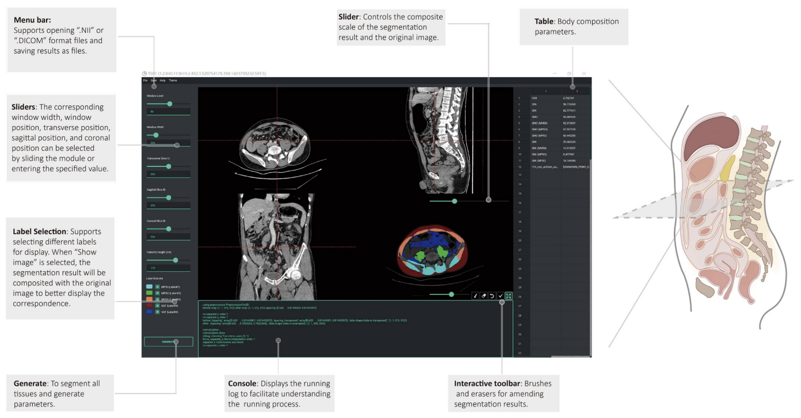
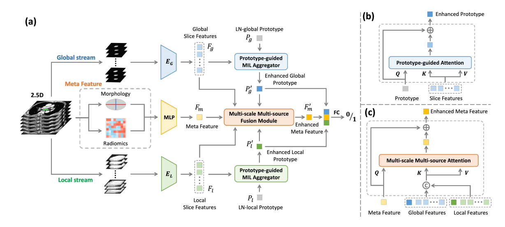
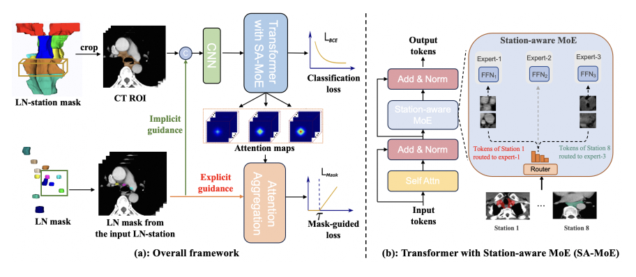
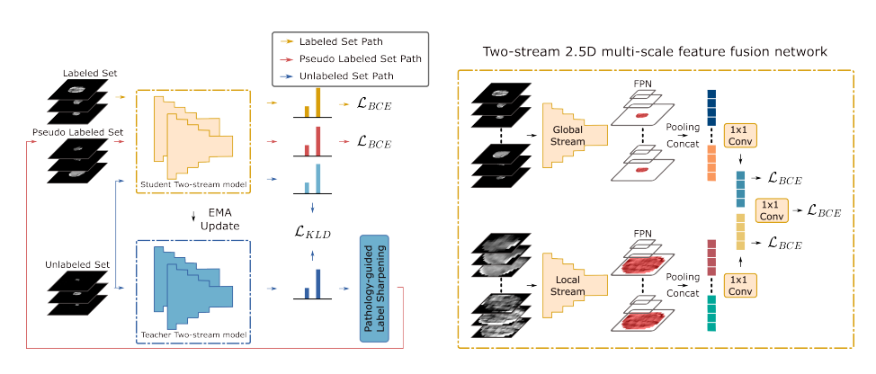
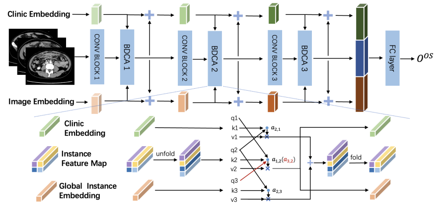
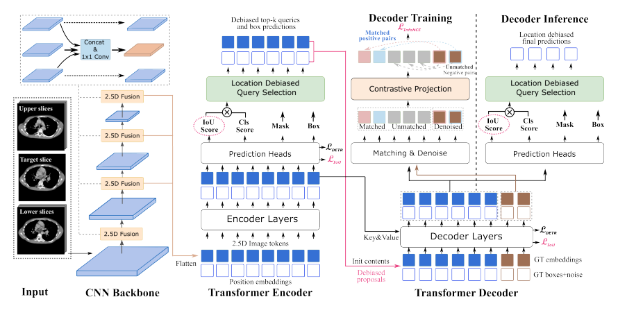
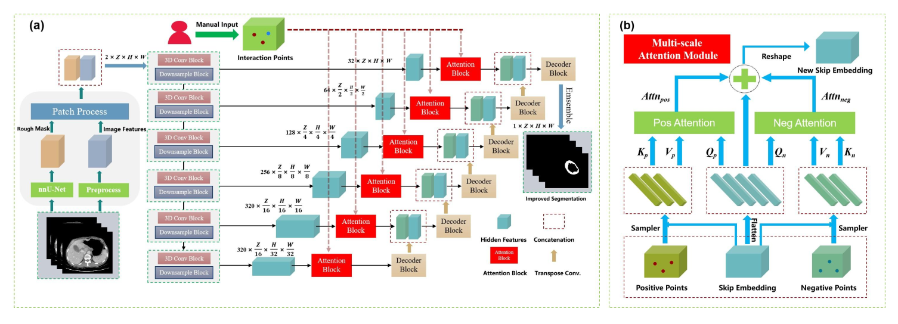

|
Haoshen Li 李浩申
Center for Machine Learning Research,
Peking University,
Beijing, China.
Email: lhs630 at stu dot pku dot edu dot cn
Email |
Google Scholar |
Github |
DBLP
|
|
Biography
I am pursuing my PhD degree at CMLR, Peking University, advised by Dr. Li Zhang and Prof. Bin Dong.
I also have a close collaborative relationship with Dr. Zifan Chen.
Previously, I obtained my B.S. from the School of Mathematical Sciences, Dalian University of Technology in 2022.
My research interests focuse on artificial intelligence and its applications in medical image computing, particularly in clinical tasks related to treatment response, prognosis prediction, and precise preoperative CT interpretation in canser treatment.
News
[05/2025] Two paper have been accepted by MICCAI 2025. (Both Early Accepted)
[01/2025] Three paper have been accepted by ISBI 2025.
[07/2024] One abstract has been accepted by RSNA 2024 (Oral).
[07/2024] One paper has been accepted by ECCV 2024.
[06/2024] One paper has been accepted by MICCAI 2024.
[01/2024] Two paper have been accepted by ISBI 2024 (1 Among Best Paper Award Finalists, & 1 Oral).
Selected Publications｜Full list
Journal:
-
|  |
Associations of subcutaneous fat area and Systemic Immune-inflammation Index with survival in patients with advanced gastric cancer receiving dual PD-1 and HER2 blockade
Meng He#, Zifan Chen#, Li Zhang, Xiangyu Gao, Xiaoyi Chong, Haoshen Li, Lin Shen, Xiaotian Zhang, Bin Dong, Ziyu Li, Lei Tang
Insights into Imaging (IF: 4.5).
|
Conference:
-
|  |
Lymph Node Metastasis Classification with Prototype-guided Multiple Instance Aggregation and Heterogeneous Feature Fusion.
Haoshen Li, Tashan Ai, Yirui Wang, Zhanghexuan Ji, Qinji Yu, Le Lu, Bin Dong, Li Zhang, Xianghua Ye, Kuaile Zhao, Dakai Jin.
International Conference on Medical Image Computing and Computer Assisted Intervention (MICCAI), 2025 (Early Accepted, Top 9%)
|
-
|  |
Metastatic Lymph Node Station Classification in Esophageal Cancer via Prior-guided Supervision and Station-Aware Mixture-of-Experts.
Haoshen Li#, Yirui Wang#, Qinji Yu#, Jie Zhu, Ke Yan, Dazhou Guo, Le Lu, Bin Dong, Li Zhang, Xianghua Ye, Qifeng Wang, Dakai Jin.
International Conference on Medical Image Computing and Computer Assisted Intervention (MICCAI), 2025 (Early Accepted, Top 9%)
|
-
|  |
Semi-supervised Lymph Node Metastasis Classification with Pathology-guided Label Sharpening and Two-streamed Multi-scale Fusion.
Haoshen Li, Yirui Wang, Jie Zhu, Dazhou Guo, Qinji Yu, Ke Yan, Le Lu, Xianghua Ye, Li Zhang, Qifeng Wang, Dakai Jin.
International Conference on Medical Image Computing and Computer Assisted Intervention (MICCAI), 2024
|
-
|  |
Multi-Stage Bidirectional Cross-Attention Model for Predicting Prognosis in Multiple Peritoneum Lesions with Clinical Information.
Haoshen Li, Jieyuan Cai, Yiyuan Wei, Zifan Chen, Heyun Chen, Jie Zhao, Yanjie Shi, Bin Dong, Lei Tang, Xiaotian Zhang, Li Zhang.
IEEE International Symposium on Biomedical Imaging (ISBI), 2025.
|
-
|  |
Effective Lymph Nodes Detection in CT Scans Using Location Debiased Query Selection and Contrastive Query Representation in Transformer.
Qinji Yu#, Yirui Wang#, Ke Yan, Haoshen Li, Dazhou Guo, Li Zhang, Le Lu, Na Shen, Qifeng Wang, Xiaowei Ding, Xianghua Ye, Dakai Jin.
European Conference on Computer Vision (ECCV), 2024.
|
-
|  |
MSI-UNet: A Flexible UNet-Based Multi-Scale Interactive Framework for 3D Gastric Tumor Segmentation on CT Scans.
Heyun Chen, Zifan Chen, Jie Zhao, Haoshen Li, Jiazheng Li, Yiting Liu, Mingze Yuan, Peng Bao, Xinyu Nan, Bin Dong, Lei Tang, Li Zhang.
IEEE International Symposium on Biomedical Imaging (ISBI), 2024. (Oral)
|
Selected Awards
China National Scholarship, Peking University, 2024.
Merit Student, Peking University, 2024.
Hua Luogeng Scholarship, 2020.
ISBI 2024 Best Paper Award Finalists.
Services
Conference Reviewer: MICCAI 2025, ISBI 2025, AAAI 2026